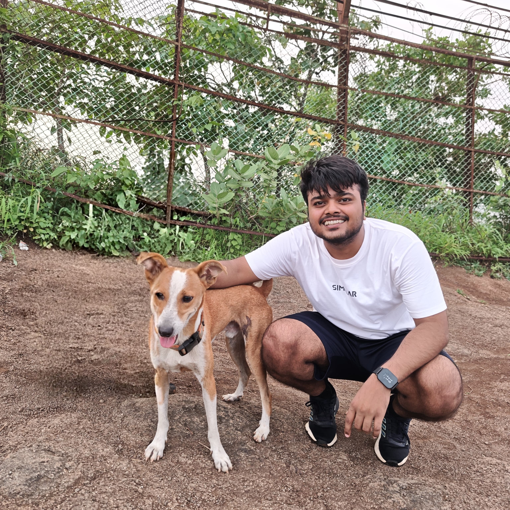

Software Developer I (Algorithms) - Kinaxis India
Building agentic supply-chain decision intelligence, differentiable inventory policies, stochastic network models, and derivative-free optimization systems.
Applied AI and Algorithms Engineer.
Currently working as an SDE 1 (Applied AI & Algorithms) in the Kinaxis India Research Team.
I completed my M.Tech in IEOR at IIT Bombay, specializing in computation and data science. My work spans reinforcement learning, agentic decision intelligence, simulation, and stochastic optimization.
My usual day looks like this:
• Teaching machines to think.
• Occasionally teaching them not to hallucinate.
• Constantly teaching myself to do the same.

Building agentic supply-chain decision intelligence, differentiable inventory policies, stochastic network models, and derivative-free optimization systems.
Built an open-source SimPy library for flexible job-shop scheduling and a DQN agent that reduced makespan by 42% versus conventional dispatching rules.
Ran more than one million simulations and combined data farming, clustering, neural networks, random forests, and SHAP to explain simulation outcomes.
Modeled 58,000 hospital admissions with LSTM, Transformers, and LightGBM, improving disease-classification AUROC by 19% over end-to-end neural models.
Advanced computational research across AI, simulation, and decision intelligence.
Built a grounded, auditable LangGraph decision layer for supply-chain data and live events.
Developed a stateful, checkpointed agentic system with human approval for every data write. Intent-driven selective retrieval achieved a 93% evaluation pass rate, 96% grounded structured output, 2.4-second median latency, and reduced numeric hallucination from 18% to 2%.
Learned multi-echelon replenishment policies through differentiable simulation.
Built a PyTorch inventory model using HDPO and implemented vanilla and graph neural networks to coordinate store and warehouse replenishment. Achieved optimality gaps as low as 0.03% while reducing data requirements by up to 64x.
Reduced flexible job-shop makespan by 42% with a custom DQN scheduling agent.
Modeled a production scheduling system as a discrete-event simulation in SimPy, implemented a DQN from scratch, and trained it with custom reward shaping to outperform conventional dispatching rules.
Explained complex simulation outcomes using data farming, clustering, and SHAP.
Performed more than one million simulations, clustered outputs with K-Means and DBSCAN, and used SHAP to quantify each input feature's marginal contribution across neural-network and random-forest models.
Built an open-source recommender with privacy protection across the full pipeline.
Applied three Laplace-noise mechanisms at input, processing, and output stages and implemented ALS and SGD matrix factorization from scratch. Achieved 0.92 RMSE on perturbed data versus 0.85 on clean data.
Fine-tuned GPT-1 on large knowledge graphs for commonsense inference generation.
Leveraged ConceptNet and ATOMIC knowledge graphs with over 40 million and 877,000 tokens respectively, achieving 11.14 perplexity and a 15.10 BLEU-2 score for generated commonsense inferences.
Modeled stochastic demand and lead-time propagation across complex inventory networks.
Derived lead-time demand moments under demand and lead-time uncertainty, selected suitable probability distributions, and computed service-level-constrained reorder points and expected backorders. Modeled bill-of-material dependencies as a graph with ranking and cycle-detection algorithms.
Optimized service levels in nonlinear and discontinuous inventory systems.
Formulated a stochastic nonlinear cost model and solved it with SciPy's Dual Annealing and Differential Evolution. Added batched warm starts and cost-based variable elimination to accelerate convergence and improve numerical stability.
Built and validated parametric approximations for convoluted probability distributions.
Developed a parametric approximation for the convolution of independent distributions, ranked candidate models using AIC and BIC, evaluated fit with the Kolmogorov-Smirnov statistic, and validated results with PP and QQ plots.
Created a configurable SimPy library for flexible job-shop production scheduling.
Supports configurable work centers and machines, pluggable FIFO, SPT, EDD, LPT, and FIS sequencing rules, and complete live-state access. Simulations can be paused, tested through sub-simulations, and resumed with the selected strategy.
Predicted patient outcomes from 58,000 hospital admissions and longitudinal medical histories.
Preprocessed EHR data for more than 38,000 adult patients, developed LSTM and Transformer models for next-visit embeddings, and classified diseases into five groups. LightGBM improved AUROC by 19% over end-to-end neural models.
Modeled insurance claim distributions and quantified tail risk with VaR and TVaR.
Analyzed claim amounts using statistical visualizations, identified underlying distributions with Kolmogorov-Smirnov and chi-squared tests, compared risk across claim categories, and proposed no-claim incentives and tiered premium pricing.
"Monu possesses deep knowledge of LLM and simulation research. He helped me many times during college and continued to provide that expertise in the industry."
"Monu brings a strong statistical foundation to every project. While working together on distribution modeling, his ability to break down mathematical complexities into functional logic made him a highly effective collaborator."